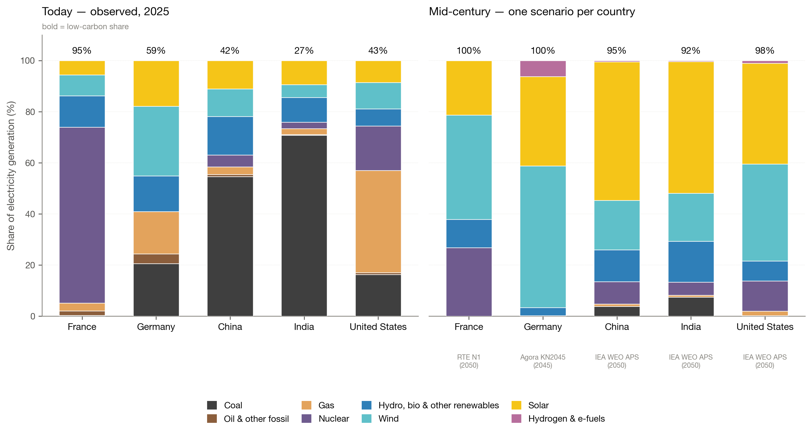
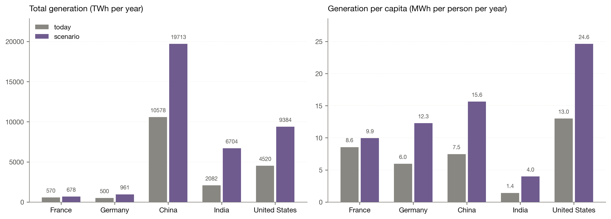

Comment cinq pays produisent leur électricité, aujourd'hui et en 2050
Ce qu'est un mix électrique, et pourquoi il faut trois chiffres pour comparer des pays : la part bas-carbone, la production en TWh et la production par habitant. Les mix 2025 de la France, de l'Allemagne, de la Chine, de l'Inde et des États-Unis, puis leurs scénarios de neutralité : tous arrivent à 62 à 90 % d'éolien et de solaire, avec une production qui double presque partout, mais ce sont des cibles, pas des prévisions. La note finit sur ce que cela change pour une interconnexion et pour un mix presque 100 % renouvelable face à la pire semaine.
1. La question et la réponse
La question. Comment l’électricité est-elle produite en France, en Allemagne, en Chine, en Inde et aux États-Unis, et comment le sera-t-elle en 2050 ?
La réponse, en trois phrases. Aujourd’hui, les cinq pays partent de situations opposées : la France produit 95 % de son électricité sans fossile, surtout grâce au nucléaire, quand l’Inde en tire encore 71 % du charbon. Leurs scénarios de neutralité carbone arrivent pourtant tous au même endroit : 62 à 90 % de la production viendrait de l’éolien et du solaire, et la production totale doublerait presque partout. Ces scénarios sont des cibles, construites par des organismes différents avec des hypothèses différentes : ils disent ce que chaque pays vise, pas ce qui arrivera.
Le plan. La section 2 définit les notions. La section 3 explique pourquoi il faut trois graphiques, et pas un, pour comparer des pays. La section 4 décrit les cinq pays en 2025, la section 5 leurs scénarios pour 2050 et les conditions de lecture. La section 6 passe en revue les idées reçues les plus courantes. La section 7 dit ce que tout cela change pour les mini-projets sur les interconnexions et sur un mix presque 100 % renouvelable.
2. Les notions
Le mix électrique d’un pays est la répartition de sa production d’électricité entre les sources : charbon, gaz, pétrole, nucléaire, hydraulique, bioénergie, éolien, solaire. On le donne en général en parts du total, sur une année.
La production se compte en énergie, sur l’année. L’unité est le térawattheure (TWh), un milliard de kilowattheures. On parle ici de production brute injectée sur le réseau : ce que les centrales livrent, pas ce que le pays consomme. La différence, ce sont les échanges avec les voisins. Un pays qui produit plus qu’il ne consomme est exportateur net ; l’inverse, importateur net.
La part bas-carbone est la part de la production qui ne vient pas d’un combustible fossile : nucléaire, hydraulique, bioénergie, éolien, solaire, et plus tard l’hydrogène produit sans fossile. Elle répond à la question « ce pays a-t-il décarboné son électricité ? ». Elle ne dit pas comment : par le nucléaire, par les renouvelables, ou par les deux.
La production par habitant divise la production annuelle par la population. Elle se compte en mégawattheures par habitant (MWh/hab, un millier de kWh). Elle dit combien un pays utilise d’électricité, rapporté à sa taille.
Un scénario est une trajectoire construite par un modèle à partir d’hypothèses : demande, coûts, politiques. Ce n’est pas une prévision. Un scénario de neutralité carbone suppose que le pays atteint ses émissions nettes nulles à une date donnée, et cherche un système électrique qui le permet. Un scénario tendanciel prolonge les politiques en vigueur.
3. Pourquoi un seul graphique ne suffit pas
La Chine produit environ 10 600 TWh d’électricité par an, la France 570 TWh : dix-huit fois moins. Sur un axe en TWh, la barre française est un trait, et le seul mix presque décarboné des cinq devient illisible. Sur un axe en pourcentage, c’est l’inverse : la France et l’Inde ont des barres de même hauteur, alors que l’une produit 8,6 MWh par habitant et l’autre 1,4.
Il faut donc trois graphiques, qui répondent à trois questions :
- le mix en parts du total répond à « qui est décarboné ? » ;
- la production totale en TWh répond à « qui pèse ? » ;
- la production par habitant répond à « qui utilise beaucoup d’électricité ? ».


4. Les cinq pays en 2025
Les chiffres viennent d’une source unique pour les cinq pays, avec les mêmes définitions : la base de données annuelle d’Ember, année 2025 complète. La population vient des Nations unies.
| Bas-carbone | dont nucléaire | dont éolien et solaire | Charbon | Gaz | Production | Par habitant | |
|---|---|---|---|---|---|---|---|
| France | 95 % | 69 % | 14 % | 0,3 % | 3 % | 570 TWh | 8,6 MWh |
| Allemagne | 59 % | 0 % | 45 % | 21 % | 17 % | 500 TWh | 6,0 MWh |
| Chine | 42 % | 5 % | 22 % | 55 % | 3 % | 10 578 TWh | 7,5 MWh |
| Inde | 27 % | 3 % | 14 % | 71 % | 2 % | 2 082 TWh | 1,4 MWh |
| États-Unis | 43 % | 17 % | 19 % | 16 % | 40 % | 4 520 TWh | 13,0 MWh |
Quatre lectures se dégagent.
La France est une exception mondiale, et elle la doit au nucléaire. 95 % de sa production est bas-carbone, dont 69 points de nucléaire. Aucun autre grand pays n’approche ce niveau par une autre voie.
L’Allemagne et les États-Unis décarbonent par des chemins différents. L’Allemagne atteint 59 % avec 45 points d’éolien et de solaire, sans aucun nucléaire. Les États-Unis atteignent 43 % en combinant le nucléaire (17 points), l’éolien et le solaire (19 points) et l’hydraulique. Surtout, ils ont remplacé du charbon par du gaz, qui fait 40 % de leur production : il émet moins que le charbon, mais reste fossile. Décarboner et développer les renouvelables ne sont pas la même chose.
La Chine est à la fois le premier producteur d’électricité au charbon et le premier producteur solaire. Elle produit 5 772 TWh au charbon, plus que toute la production électrique des États-Unis. Elle produit aussi 1 175 TWh de solaire, trois fois le solaire américain. Les deux faits sont vrais ensemble.
L’Inde pose la question dans d’autres termes. Elle produit 1,4 MWh par habitant, neuf fois moins que les États-Unis. Son enjeu n’est pas de transformer un système existant, mais d’en construire un.
5. Les cinq pays en 2050 : des cibles, pas des prévisions
5.1 D’où viennent les scénarios
Aucun exercice public ne donne la production électrique par source en 2050 pour ces cinq pays dans un cadre commun. Chaque colonne de droite de la figure vient donc d’un exercice différent.
| Pays | Scénario | Organisme | Horizon |
|---|---|---|---|
| France | Futurs énergétiques 2050, scénario N1 | RTE, le gestionnaire du réseau de transport | 2050 |
| Allemagne | KN2045 (Allemagne neutre en carbone en 2045) | Agora Energiewende, Prognos, Öko-Institut | 2045 |
| Chine, Inde, États-Unis | Announced Pledges (APS) | Agence internationale de l’énergie (AIE), World Energy Outlook 2024 | 2050 |
Le scénario N1 de RTE est le scénario médian de la famille où la France relance le nucléaire. L’Allemagne s’arrête en 2045, parce que c’est la date de neutralité qu’elle s’est fixée. Le scénario APS de l’AIE suppose que tous les engagements annoncés par les gouvernements sont tenus, à temps et en entier.
Trois règles de lecture en découlent.
Les cinq colonnes ne se comparent pas au sens strict. Elles ne partagent ni le modèle, ni les coûts, ni la demande. La figure dit « voilà ce que chaque pays vise », pas « voilà qui fera le mieux ».
Ce sont tous des scénarios de neutralité. On compare donc des ambitions entre elles. Mettre la France et l’Allemagne face à un scénario tendanciel pour la Chine ou l’Inde ferait croire à un retard qui viendrait seulement de la question posée.
Le scénario APS est optimiste. Dans le scénario tendanciel de l’AIE (Stated Policies, World Energy Outlook 2025), la part bas-carbone en 2050 n’est plus que de 87 % en Chine, 79 % en Inde et 80 % aux États-Unis, contre 95, 92 et 98 % en APS. L’écart mesure la distance entre les politiques en place et les promesses.
5.2 Ce que les scénarios ont en commun
| Bas-carbone 2025 → 2050 | Éolien et solaire 2025 → 2050 | Production 2025 → 2050 | Par habitant 2025 → 2050 | |
|---|---|---|---|---|
| France (RTE N1) | 95 → 100 % | 14 → 62 % | 570 → 678 TWh (× 1,2) | 8,6 → 9,9 MWh |
| Allemagne (KN2045, en 2045) | 59 → 100 % | 45 → 90 % | 500 → 961 TWh (× 1,9) | 6,0 → 12,3 MWh |
| Chine (AIE APS) | 42 → 95 % | 22 → 73 % | 10 578 → 19 713 TWh (× 1,9) | 7,5 → 15,6 MWh |
| Inde (AIE APS) | 27 → 92 % | 14 → 70 % | 2 082 → 6 704 TWh (× 3,2) | 1,4 → 4,0 MWh |
| États-Unis (AIE APS) | 43 → 98 % | 19 → 77 % | 4 520 → 9 384 TWh (× 2,1) | 13,0 → 24,6 MWh |
Tous convergent vers l’éolien et le solaire. De 62 % en France à 90 % en Allemagne. Les cinq pays partent de mix radicalement différents et arrivent au même endroit. C’est le résultat le plus solide de la figure, justement parce qu’il ne dépend pas d’un modèle unique. En Chine, le solaire seul atteindrait 10 688 TWh en 2050, plus que toute la production chinoise d’aujourd’hui.
La production double presque partout. Pour décarboner l’économie, on électrifie les transports, le chauffage et l’industrie, et il faut donc plus d’électricité. La France fait exception (× 1,2) parce que son électricité est déjà décarbonée : son effort porte sur les usages, pas sur le mix. Le nucléaire y garde 27 % de la production en 2050.
L’écart par habitant se réduit peu. L’Inde passe de 1,4 à 4,0 MWh par habitant : elle triple, et reste à un sixième des États-Unis (24,6). Un scénario de neutralité n’est pas un scénario de rattrapage.
6. Idées reçues
« Un pourcentage suffit pour comparer deux pays. » Non. La France et l’Inde ont des barres de même hauteur en pourcentage, mais l’une produit six fois plus d’électricité par habitant que l’autre. Il faut toujours regarder aussi les TWh et les MWh par habitant.
« Décarboner, c’est développer les renouvelables. » Pas seulement. La France est décarbonée surtout par le nucléaire. Les États-Unis ont baissé leurs émissions en remplaçant du charbon par du gaz, qui émet moins mais reste fossile.
« La Chine, c’est le charbon. » C’est vrai, et c’est aussi le premier pays solaire du monde. Retenir l’un sans l’autre donne deux discours faux.
« L’Allemagne a remplacé son nucléaire par du charbon. » Les données disent autre chose. En 2015, l’Allemagne produisait 92 TWh de nucléaire et 272 TWh au charbon. En 2025, le nucléaire est à zéro et le charbon à 103 TWh : il a été divisé par 2,6 pendant que les réacteurs fermaient. Ce qui est vrai, c’est le coût de l’occasion manquée : si ces 92 TWh nucléaires avaient remplacé du fossile au lieu de disparaître, l’Allemagne serait aujourd’hui à 77 % de bas-carbone au lieu de 59 %.
« Le mix d’un pays, c’est ce qu’il consomme. » Non, c’est ce qu’il produit. La France produit 8,6 MWh par habitant et en consomme 7,1 : l’écart part à l’export. L’Allemagne est importatrice nette depuis 2023.
« L’Allemagne sera 100 % renouvelable en 2045. » Sa production, oui, dans le scénario KN2045. Mais ce scénario prévoit encore 22 TWh d’importations nettes, qui ne sont pas dans la barre. Il faut dire les deux.
« Les scénarios disent ce qui va se passer. » Non. Ils disent ce qu’il faudrait construire pour atteindre une cible. Le scénario APS suppose que toutes les promesses sont tenues ; avec les politiques actuelles, la part bas-carbone en 2050 perd 8 à 18 points selon le pays (section 5.1).
7. Ce que ça change pour les mini-projets
Deux mini-projets du cours partent de ces constats : la valeur d’une interconnexion, et un mix presque 100 % renouvelable face à la pire semaine météo. Les deux modélisent plusieurs pays européens reliés par des lignes.
Une interconnexion vaut par la différence entre les mix. Une ligne entre deux pays sert quand l’électricité est moins chère d’un côté que de l’autre. Aujourd’hui, cette différence vient surtout des centrales. La France a 69 % de nucléaire et 3 % de gaz ; l’Allemagne a 21 % de charbon et 17 % de gaz. Le prix allemand dépend donc beaucoup plus du prix du gaz et du charbon que le prix français : c’est pourquoi il faut tester la valeur d’une interconnexion sous plusieurs prix du gaz. La note Comment se forme le prix de l’électricité explique le mécanisme. Le sens des flux découle de la même différence : la France est exportatrice nette (1,5 MWh par habitant d’écart entre production et consommation), l’Allemagne importatrice nette. Une rente de congestion apparaît quand la ligne est saturée et que les prix restent différents de part et d’autre : elle vaut l’écart de prix multiplié par le flux.
En 2050, la différence entre pays change de nature. Si tous les mix convergent vers l’éolien et le solaire, les pays se ressemblent par leurs centrales. Ce qui les distingue alors, c’est leur météo à un instant donné : une ligne sert à faire passer le vent d’un pays vers un pays sans vent. Elle sert beaucoup moins quand le calme et le ciel couvert touchent tout le continent en même temps.
Un mix annuel ne dit rien de la pire semaine. Tous les chiffres de cette note sont des énergies sur une année. Un pays à 90 % d’éolien et de solaire sur l’année peut connaître une semaine où ni l’un ni l’autre ne produit. Le scénario allemand KN2045 montre les trois réponses qu’un modèle doit arbitrer, et leur ordre de grandeur sur l’année 2045 :
| Levier, dans le scénario KN2045 (2045) | Énergie sur l’année |
|---|---|
| Centrales à hydrogène (le combustible de secours) | 60 TWh, 6 % de la production |
| Électricité restituée par les stockages (batteries, stations de pompage) | 31 TWh |
| Importations nettes (les interconnexions) | 22 TWh |
| Production éolienne et solaire écrêtée, faute d’usage | 48 TWh, 5 % de l’éolien et du solaire |
L’écrêtement est la production que l’on jette parce que personne ne peut l’utiliser au moment où elle est produite. Il est le prix à payer pour avoir assez de capacité les jours sans vent. Le scénario français N1 garde 27 % de nucléaire, une source pilotable qui ne dépend pas de la météo, et prévoit aussi 11 GW de nouvelles centrales thermiques décarbonées comme moyen de flexibilité.
Pour le mini-projet, ces chiffres donnent un point de repère : un modèle qui couvre la pire semaine sans combustible de secours, sans stockage et sans importation, ou qui n’écrête jamais, doit être vérifié.
8. Ce qu’il faut retenir
Pour comparer des pays, il faut trois chiffres. La part bas-carbone dit qui est décarboné, les TWh disent qui pèse, les MWh par habitant disent qui utilise beaucoup d’électricité. La Chine produit dix-huit fois plus que la France, et un Indien utilise neuf fois moins d’électricité qu’un Américain.
Les pays partent de très loin les uns des autres. La France est à 95 % de bas-carbone grâce au nucléaire, l’Allemagne à 59 % grâce aux renouvelables, les États-Unis à 43 % avec 40 % de gaz, la Chine et l’Inde encore dominées par le charbon.
Leurs cibles se ressemblent. Tous les scénarios de neutralité donnent 62 à 90 % d’éolien et de solaire en 2050, et presque tous doublent la production d’électricité. Ce sont des cibles, construites par des organismes différents, et le scénario de l’AIE suppose que toutes les promesses sont tenues.
Un mix annuel cache les heures difficiles. Un système dominé par l’éolien et le solaire a besoin de combustible de secours, de stockage et d’interconnexions pour passer les semaines sans vent, et il jette une partie de sa production les autres jours.
9. Sources
- Agora Energiewende, Prognos, Öko-Institut, Wuppertal Institut, Klimaneutrales Deutschland 2045, juin 2021, figures 17 et 18, p. 37-38, https://www.agora-energiewende.de/fileadmin/Projekte/2021/2021_04_KNDE45/A-EW_231_KNDE2045_Langfassung_DE_WEB.pdf.
- AIE, World Energy Outlook 2024, annexe A, tables A.16 à A.22, scénario Announced Pledges 2050, https://www.iea.org/reports/world-energy-outlook-2024.
- AIE, World Energy Outlook 2025, annexe A, tables A.17 à A.23, scénario Stated Policies 2050, https://www.iea.org/reports/world-energy-outlook-2025.
- Ember, Yearly Electricity Data, édition 2026 (données 2000-2025), licence CC-BY-4.0, https://ember-energy.org/data/yearly-electricity-data/.
- Nations unies, World Population Prospects 2024, variante médiane, https://population.un.org/wpp/.
- RTE, Futurs énergétiques 2050, rapport complet, février 2022, chapitre 5, fiche du scénario N1, p. 177, https://assets.rte-france.com/prod/public/2022-02/BP50_Principaux%20re%CC%81sultats_fev2022_Chap5_scenarios%20mix%20production%20consommation.pdf.
10. Vidéos, billets et posts sur le même sujet
Des vidéos courtes, des billets de blog et des posts LinkedIn de l’auteur reprennent des points de cette note.
- Mix de production d’électricité : énergie et puissance (billet de blog) : comment décrire le mix d’un pays, en distinguant l’énergie produite et la puissance installée (France et Allemagne).
- France-Allemagne, deux visions européennes de l’énergie (billet de blog) : les deux transitions comparées : nucléaire, renouvelables, réseau, biomasse.
- 32 % ou 40 % ? Ce qui se cache derrière nos engagements à l’horizon 2030 dans le système électrique (billet de blog) : pourquoi la France doit développer les renouvelables d’ici 2030, même en relançant le nucléaire.
- Les scénarios RTE, un développement ambitieux du nucléaire et des renouvelables est nécessaire (billet de blog) : une lecture des scénarios Futurs énergétiques 2050 de RTE, d’où vient le scénario français de la note.
- Photovoltaïque contre charbon (post LinkedIn repris sur le blog, avec figures et sources ; le post sur LinkedIn) : le mix indien en mouvement : le solaire progresse vite, mais la production au charbon ne baisse pas encore.
Télécharger la version PDF (les liens y restent actifs).